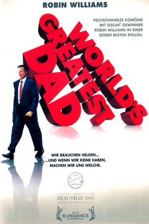

#752 World's Greatest Dad
 
 IMDB-Wertung: 6.9 / 10
IMDB-Wertung: 6.9 / 10  Metascore: 69
Metascore: 69 
Ursprünglich wollte Lance Clayton (Robin Williams) Autor werden, sein Berufsweg führte ihn schließlich aber an eine Schule, wo er als Literaturlehrer arbeitet. Glücklich ist er darüber nicht, genauso wenig wie über das Verhältnis zu seinem pubertierenden Sohn Kyle (Daryl Sabara) - der mit der Kunstlehrerin (Alexie Gilmore) anbandelt. Dann jedoch werden Lances Sorgen noch um einiges größer. Ein Unfall mit tödlicher Folge passiert und beschert ihm Kummer, aber auch eine riesige Chance. Vielleicht schafft Lance es doch noch, berühmt zu werden...
Jahr: 2009
Dauer: 99 Minuten
FSK: 16
Land: USA Studio: Magnolia PicturesTonspuren: DTS - ,
Untertitel: Deutsch,
Auflösung: 1080p (1920x1040) Größe: 8140 MB
Genre: Komödie, Drama
Regisseur: Bobcat Goldthwait
Drehbuch: Bobcat Goldthwait
Soundtrack: Gerald Brunskill
Darsteller:
 Robin Williams als Lance
Robin Williams als Lance Daryl Sabara als Kyle Clayton
Daryl Sabara als Kyle Clayton- Morgan Murphy als Morgan
- Naomi Glick als Ginger
 Geoff Pierson als Principal Anderson
Geoff Pierson als Principal Anderson- Henry Simmons als Mike Lane
- Zachary Vitale als Peter
 Alexie Gilmore als Claire Reed
Alexie Gilmore als Claire Reed- Evan Martin als Andrew
- Ellyn Jameson als Jennifer
- Ray Buckley als Metal Kid
- Jermaine Williams als Jason
- Lorraine Nicholson als Heather
- Mitzi McCall als Bonnie
- Cheri Minns als Nosy Neighbor
 Tony V. als Dr. Pentola
Tony V. als Dr. Pentola- Krist Novoselic als Newsstand Vendor
 Tom Kenny als Jerry Klein
Tom Kenny als Jerry Klein Jill Talley als Make-Up Woman
Jill Talley als Make-Up Woman Toby Huss als Bert Green
Toby Huss als Bert Green- Bruce Hornsby als Bruce Hornsby
- Wayne Bastrup als TV Crew Member , uncredited
- Brittany Christine als Fantasy Girl , uncredited
 Bobcat Goldthwait als Chaffeur , uncredited
Bobcat Goldthwait als Chaffeur , uncredited- John Misner als Book Publisher , uncredited
- Melissa Pang als Beautiful LA Person , uncredited
- Andra Petru als Fantasy Girl , uncredited
- Dan Spencer als Dan Spencer
- Michael Thomas Moore als Chris
- Rebecca Erwin Spencer als Nosy Neighbor
- Zazu als Nosy Neighbor
- Mable Mae als Mabel
- Zoe als The Fighting Pug
- Deborah Horne als Dr. Dana
- Riley Dean Stone als Bruce Hornsby's Mic Stand
- Danielle Barnum als Fantasy Girl , uncredited
- Heidi Barrientes als Fantasy Girl , uncredited
- Constance Best als Bookstore Fan , uncredited
- Breighana Campion als Student / Girl Reading Newspaper , uncredited
- Gemma Clarke als Student , uncredited
- Julian Curelop als Student , uncredited
- Gary als Low Income Person , uncredited
- Brandii R. Grace als Student , uncredited
- Anne Sheridan Kennedy als Teacher , uncredited
- Richard Kilpatrick als Student , uncredited
- Crystal Rainbow Mort als Student , uncredited
- T.J. Newton als Teacher , uncredited
- Richard Scott als Basketball Player , uncredited
- Mara Stevë als Low Income Housing Person , uncredited
- Peter Weinstein als Publisher , uncredited
Datei: X:\2009(N-Z)\World's Greatest Dad (2009, FSK16, 1920x1040).mkv seit 19.03.2015
Festplatte: HD 2009(G-Z)-2010(A-F)
 Es gibt insgesamt 99 Filme in der Gruppe '2009(N-Z)'
Es gibt insgesamt 99 Filme in der Gruppe '2009(N-Z)'